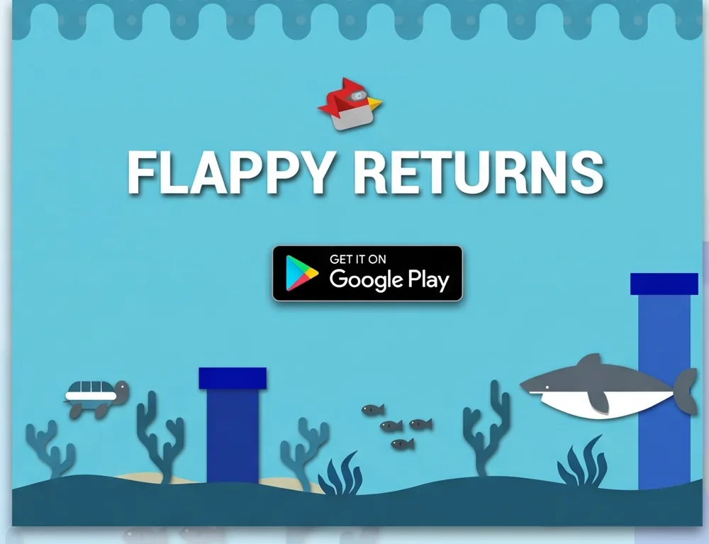
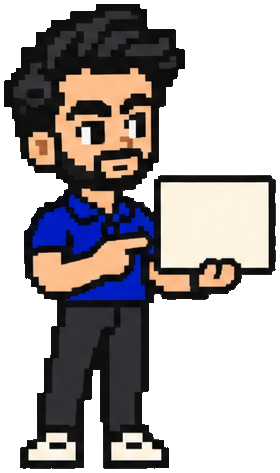

Design became products.
Products became a company.
01 – Design
No budget. So I opened Photoshop.
A student trip company at NUST led to freelance gigs, then a design agency contract.

02 – First app, 2015
Then I built what I designed.
Flappy Returns. My first published game, built on a physics engine.
03 – CodeJunkie
A company. And 25 people.
Co-founded in my final semester. I ran tech as CTO, building products for startups and corporate teams.
- From idea to MVP, worldwide
- Recognised by DesignRush
More about my role
I led the technical side, trained our designers and developers, and delivered work for startups and corporate clients, including banks in the UAE and Oman.
My computer science background let me take projects from interface design into full web apps.
